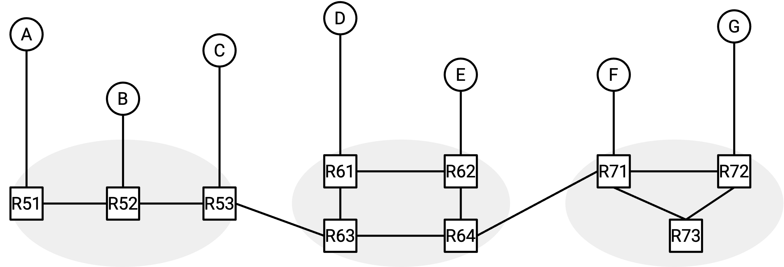
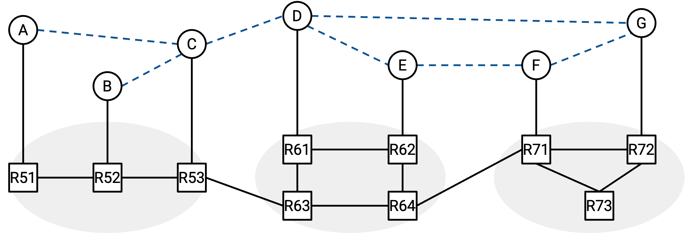
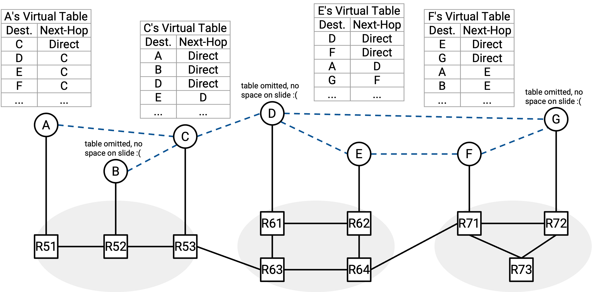
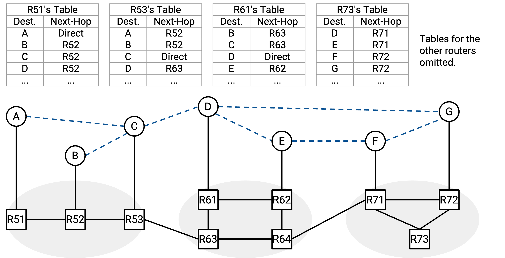
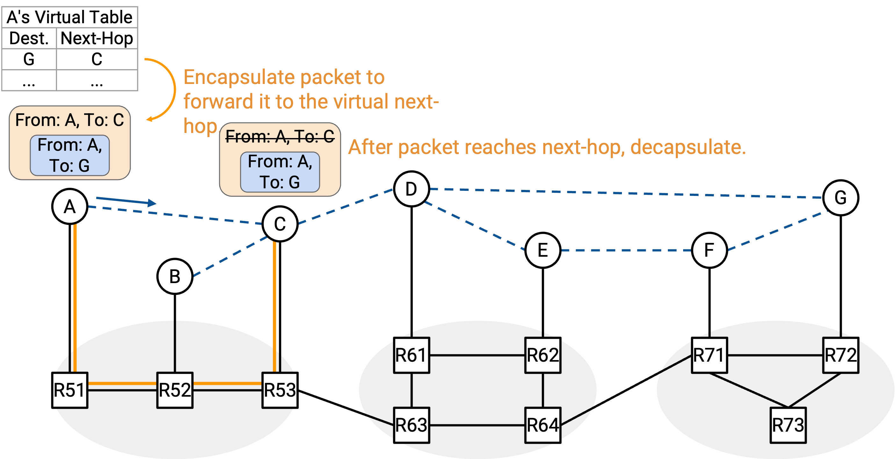
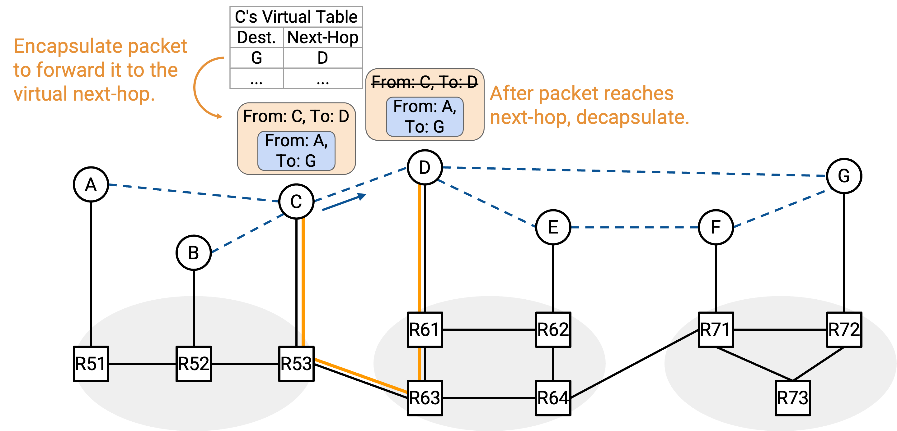
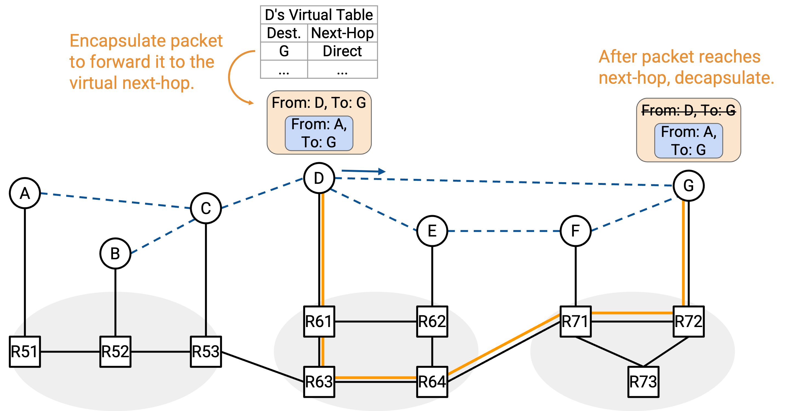
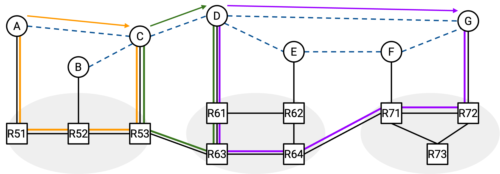
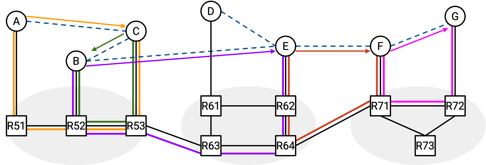
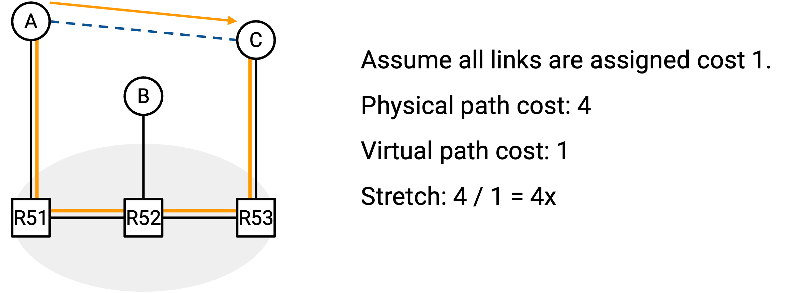

Overlay Multicast
Brief History of Overlay Multicast
Recall that IP multicast was developed in the 1990s and 2000s. In the early 2000s, deployment of IP multicast was slow, in part because of the problems we discussed earlier. As a result, many startups emerged, including FastForward Networks (Berkeley), ProxyNet (Berkeley), Sightpath (MIT), and Akamai (MIT). Their work was largely independent, but their solutions all used the same fundamental idea of overlay-based multicast.
Overlay Multicast: Definition
Recall one of our major problems with IP multicast: It’s difficult to implement multicast across different networks. In this diagram, if all the hosts are members of the same group, it’s difficult for routers across different networks to coordinate and send packets to the entire group.

Our solution here is to build a virtual network topology that directly connects the hosts to each other:

The virtual links we’ve drawn here are a fiction, and they don’t actually correspond to physical links in real life. For example, if A wanted to send a packet to D along that virtual link, the packet would still have to travel across several real routers and links.
However, by drawing these virtual links, we can now pretend that all the hosts are connected to each other in a small local network. These hosts can then run multicast routing algorithms to forward packets between each other.

For example, we could build a core-based tree rooted at D, using the virtual links. Then, everyone can multicast packets by broadcasting packets along the virtual links of the tree.
Remember that when a packet is sent along a virtual link, it still has to travel across several real routers and links. For example, if A wants to forward a packet to both D and B, it must send two unicast packets: “From A, To D,” and “From A, To B.” Both of these unicast packets will travel along several real routers and links to reach their destination.
In the example below, A is sending a unicast packet to G. The packet travels along several real routers and links to reach G. Along the way, intermediate hosts C and D receive and forward the packet.

Intuitively, the virtual network gives us the illusion that all the hosts are connected in a small local network, even though they are scattered all around the world in real life.
From a network architecture standpoint, the end hosts (at Layer 7) are now responsible for running multicast protocols. The end hosts are now acting as virtual routers. This means that the end hosts have to build multicast forwarding tables, know about their outgoing virtual links (e.g. in static table entries), and forward packets along virtual links. Routers don’t need to think about multicasting at all (they can just run standard unicast protocols).
This is different from IP multicasting, where the routers were responsible for running multicast protocols, and the end hosts didn’t need to think about the protocols (they could just send packets to a group address).
The virtual links we’ve drawn form the overlay network. The end hosts (virtual routers) in the overlay network talk to each other to run a multicast routing algorithm. The overlay routing tables are based on the virtual links (e.g. B’s table might say, if I receive packets from A, forward them to C and D).
The real links and routers responsible for sending packets along virtual links form the underlay network. The underlay network routers talk to each other to run the standard unicast routing algorithms (e.g. distance-vector, BGP). The underlay routing tables are based on the physical links (e.g. R1’s table might say, the next-hop to G is R2).

To implement the overlay and underlay networks, we’ll use encapsulation. Suppose we want to multicast a packet to the group address. Then the inner header (overlay) would say “From A, To G1,” and the hosts would read this overlay packet to decide how to forward packets.
Suppose Host A decides that this packet needs to be forwarded along the virtual link C. Then Host A will encapsulate this packet with an outer header “From A, To C” and unicast this packet to C. The underlay is responsible for forwarding the unicast packet from A to C, using only the outer header.



Implementing Overlay Networks
In the most basic model, the nodes in the overlay network are the end hosts (e.g. your personal laptop). This means that the end hosts need to understand the multicast routing protocol, build their own forwarding tables, and forward packets.
The end hosts could also be proxy servers installed by some company (similar to CDN servers). These machines are still end hosts running multicast routing protocols, but instead of being actual user machines (e.g. your personal laptop), they are deployed solely to help support multicast routing. Note that these proxy servers are still end hosts running multicast routing in the overlay. These servers still need to encapsulate packets and unicast them through the underlay network, so these servers are not Layer 3 routers.
The general idea of overlay networks can be also used for other purposes besides multicast. For example, packets could be unicast across the overlay network as well. You could build a peer-to-peer file sharing service using an overlay topology. (A peer-to-peer service is one where any user in the group can share a file with any other user, without relying on a central server storing all the files.)
Many overlay networks can co-exist at the same time, over the same underlay network. From the end host’s perspective, the end host would be running two separate applications. Each application has its own separate forwarding table, list of neighboring links, and so on. Each application could be offering a different service.
Benefits of Overlay Multicast
What’s good about the overlay multicast approach?
The biggest benefit is ease of deployment. From the perspective of the underlay routers, the overlay network is just another application sending and receiving unicast packets. The underlay routers and protocols don’t need any modifications.
IP multicast required most or all of the routers to understand multicast protocols. By contrast, in overlay multicast, only certain participating nodes (e.g. the users in the group) need to understand the protocol. All of the other end hosts don’t need any modifications.
Each overlay multicast application can use its own implementation or protocol, so there’s no need for standardization between different applications (e.g. different groups). Contrast this with IP multicast, where all routers need to speak the same protocol so that they can coordinate with each other.
Because each overlay multicast application can make its own implementation decisions, this approach also gives applications the freedom to define their own goals.
Each application can decide how to draw their virtual topology, how to set their link costs, and how to compute paths through the network. Some groups might care more about latency, while other groups might care more about throughput.
Access control is also easier in overlay multicast (compared to IP multicast). The routing protocol implementation can be customized to only allow authorized users to participate in the protocol. Each application can make their own decision about what it means to authorize a user.
Each application can also decide its own business model. The routing protocol implementation can be customized to track usage and charge users accordingly, and each application can make their own decision about what it means to track usage. For example, an overlay network of CDN servers might be used to stream a sports game to millions of users. The application itself can track which users are watching the sports game, and charge them accordingly.
More unusual business models also exist. For example, a peer-to-peer file sharing system might be used to illegally stream copyrighted material. This system might want to avoid tracking users to avoid getting users in trouble.
Overlay Multicast Performance
The performance of an overlay network is highly dependent on the virtual topology that you draw between end hosts. In particular, the links and costs in the virtual topology should accurately reflect the corresponding underlay topology.
For example, this overlay network topology closely matches the corresponding underlay topology.

The virtual link from A to C could be assigned a low cost because in reality, A and C are close to each other (the underlay path passes through 3 routers). The virtual link from D to G could be assigned a high cost because in reality, D and G are further away (the underlay path passes through 5 routers). If we compute shortest paths in the overlay topology, the resulting paths should be pretty similar to the shortest paths in the underlay topology. Having short paths through the underlay is desirable, since the packets are ultimately being forwarded through the underlay network.
In this particular overlay topology, packets from A to G end up getting forwarded along a path that is pretty close to the shortest path.
Here is an example of an overlay network that poorly models the corresponding underlay topology.

Notice that we didn’t change anything about the underlay topology. We only changed the placements of the virtual links.
In this particular overlay topology, if we tried to compute the shortest path from A to G, we would get the path from A to C to B to E to F to G. If we then sent packets along this path, packets from A to G end up getting forwarded along a much worse path in the underlay network.
To measure the performance of an overlay network, we can define the stretch factor. This is the ratio of the underlay path cost to the overlay path cost.

In the example above, the underlay cost is 4, and the overlay cost is 1, which gives us a stretch factor of 4. To better model the underlay network, it might make more sense to assign the virtual link a cost of 4.
High stretch values are bad, because it means that the underlay path is many times longer than the corresponding overlay path. Ideally, we’d like to have stretch values that are lower (closer to 1), which means that our underlay path cost is roughly the same as the overlay path cost.
How do we build low-stretch overlay topologies? Sometimes, operators manually design the topologies.
Self-organizing protocols also exist for automatically discovering a good overlay topology. At a high level, a self-organizing protocol might work like this: Initially, your neighbors are selected at random (i.e. draw virtual links from you to random neighbors). Periodically, you search for new candidate neighbors, and measure your distance to those new candidate neighbors (e.g. send a packet and measure the round-trip time). If the best candidate neighbor outperforms your worst current neighbor, then abandon your worst current neighbor (delete the virtual link) and add the best candidate neighbor (add a new virtual link).
Drawbacks of Overlay Multicast
Overlay multicast introduces additional overhead, which affects performance. For example, extra time and processing power is needed to encapsulate and decapsulate packets.
Overlay multicast is not built into the Internet, which means that application developers must implement overlay multicast themselves. Contrast this with IP multicast, where the application developer can just send packets to group addresses, without having to build their own forwarding tables and so on.
Despite these drawbacks, overlay multicast has good enough performance that it is commonly deployed in the Internet today.